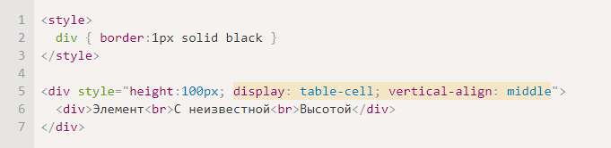

Вертикальное центрирование с table-cell
Внутри ячеек свойство vertical-align выравнивает содержимое по вертикали.
Это можно использовать для центрирования:
CSS не требует, чтобы вокруг table-cell была структура таблицы: table-row и т.п. Может быть просто такой одинокий DIV, это допустимо.
При этом он ведёт себя как ячейка TD, то есть подстраивается под размер содержимого и умеет вертикально центрировать его при помощи vertical-align.